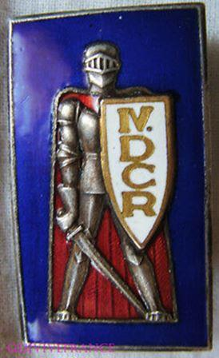

Cet épisode fondateur est trop souvent négligé par l'historiographie tant l'histoire militaire rebute toujours la majorité des chercheurs français. Pourtant, pour bien comprendre l'homme du 18 juin, il faut se pencher sur la participation du colonel puis général de Gaulle aux combats de la campagne de France. Certes, je ne reviendrai pas sur le déroulement détaillé des combats, je vous renvoie à mes précédentes publications1, mais sur l'analyse que l'on peut en faire.
De Gaulle présente son unité de chars au président de la République,
23 octobre 1939
Le commandement d'une division cuirassée
Tout commence fin mars 1940 lorsque le colonel de Gaulle reçoit le commandement de la 4e Division Cuirassée (D.C.r) qui n'existe pas encore et dont il doit assurer le rassemblement pour qu'elle soit opérationnelle à la date du 15 mai. Si c'est une sorte de consécration pour lui et pour ses idées mais il sait que la tâche est immense. Par ailleurs, cette nomination ne change toujours pas la doctrine d'emploi des blindés français, y compris de sa division, à savoir soutenir l'action de l'infanterie alors que de Gaulle préconise leur emploi groupé sur le modèle allemand ou soviétique.
Malgré tous les efforts mis en œuvre par de Gaulle, le 15 mai, alors que l'offensive surprise de la Wehrmacht a commencé depuis cinq jours, sa division est loin d'être opérationnelle pour mener une mission de combat. Pourtant, face à l'urgence de la situation, de Gaulle reçoit l'ordre suivant du général Doumenc : « le commandement veut établir un front défensif sur l’Aisne et sur l’Ailette pour barrer la route de Paris. La VIème Armée, commandée par le général Touchon et formée d’unités prélevées dans l’Est, va s’y déployer. Avec votre division, opérant seule en avant dans la région de Laon, vous avez à gagner le temps nécessaire à cette mise en place. » Il s’agit donc d’une mission classique de couverture qui correspondrait mieux à une DLM (Division de Légère Mécanique) mais la 4e D.C.r est la seule unité disponible.
De Gaulle doit rendre compte directement au général Georges, commandant le front Nord-Est. Celui-ci le reçoit pour lui confirmer sa mission et le choix que l’État-major a fait en le mettant à la tête d’une telle unité : « Allez, de Gaulle ! Pour vous, qui avez, depuis longtemps, les conceptions que l’ennemi applique, voilà l’occasion d’agir. »
Premier sang
De Gaulle ne dispose alors que de deux jours pour se déployer prématurément dans le secteur de Bruyères près de Laon. Les moyens disponibles sont acheminés par voie ferrée mais plusieurs composantes de la division ne pourront donc pas participer aux opérations : aucune unité anti-char et anti-aérienne n’est disponible, seuls deux groupes d’artillerie du 322e R.A.T.T.T. sont déployés le 17 mai au soir, le reste de l’artillerie divisionnaire ne participera pas à la bataille. De plus, les éléments de découverte (10e Cuirassiers) sont eux aussi indisponibles car toujours en cours d’acheminement, ils rejoindront la division dans la journée du 18. Enfin, la composante « infanterie » de la division se limite au seul 4e Bataillon de Chasseurs à Pied (B.C.P.) mais il ne dispose quasiment d’aucun moyen motorisé (aucune automitrailleuse A.M.D, aucune voiture tout terrain de commandement, pas de camion atelier et un seul camion de dépannage) et les chasseurs sont transportés à bord de bus réquisitionnés. Le 7e R.D.P (Dragons Portés) ne rejoindra la division qu’après les combats. Autre problème majeur qui va sérieusement handicaper le déroulement de l’attaque française : aucune unité divisionnaire ne possède postes T.S.F à l’exception des unités blindées. Elles ne pourront donc pas communiquer entre elles ou avec le PC divisionnaire pour coordonner leurs actions. En ce qui concerne les unités blindées, De Gaulle peut compter sur deux demi-brigades : la 6e demi-brigade lourde aux ordres du Lieutenant-Colonel Sudre s’articule autour du 46e Bataillon de Chars de Combat (B.C.C) sur B1 bis (22 engins disponibles le 17 au matin, la troisième compagnie sera disponible le 19) et de la 345e Compagnie Autonome de Chars de Combat (C.A.C.C.) sur D2 (14 chars). Bref, les conditions d'engagement à partir du 17 mai à l'aube sont loin d'être idéales. Si les blindés parviennent à atteindre Montcornet – leur objectif – en montrant leur supériorité sur l'infanterie et les chars légers allemands, la coordination entre les différentes unités et la liaison interarmes sont totalement chaotiques, ce qui engendre notamment de nombreux retards et empêchent les fantassins de coopérer efficacement avec les chars. Enfin, l'absence de moyens anti-aérien permet à la Luftwaffe de lancer des raids dévastateurs pour les blindés français en fin de journée.
Néanmoins le 17 mai au soir, de Gaulle peut être satisfait. Sa mission de couverture en profondeur sur le flanc de l’ennemi est une réussite. Malgré l’absence de moyen d’éclairage et d’infanterie, les chars français ont tout écrasé sur leur passage.
De Gaulle écrit : « Il y a, sur le terrain, plusieurs centaines de morts allemands et nombre de camions ennemis brûlés. Nous avons fait 130 prisonniers. Nous n’avons pas perdu 200 hommes. A l’arrière, sur les routes, des réfugiés ont cessé de fuir. Certains, même, rebroussent chemin. Car le bruit court dans les tristes colonnes que les troupes françaises ont avancé. »
Son succès est décuplé parce que de Gaulle a eu la bonne idée d’emmener avec lui le journaliste Charles Giron qui parcourt le champ de bataille et qui rapporte à Paris le succès de l’opération de la 4e D.C.r. Au G.Q.G aussi, le succès de Montcornet ne passe pas inaperçu. De Gaulle y apparaît comme l’auteur du premier succès de la guerre. Enfin, de Gaulle n’hésite à appeler directement Paul Reynaud, dont il est le protégé, pour lui rendre compte de l’évolution positive de sa mission. C’est donc un succès à la fois psychologique et tactique que ce combat de Montcornet. Néanmoins, il faut souligner que l’arrivée tardive du 4e B.C.P et les problèmes de communication entre les trois unités de chars ont démontré, sans grande conséquence, les limites de l’action menée par de Gaulle. Limites qui concernent les moyens de sa division et non pas ses capacités de commandement comme certains voudraient encore le faire croire aujourd'hui.
Bataille de Montcornet
Crécy-sur-Serre
Si la journée du 18 mai permet aux éléments engagés de souffler, de Gaulle reçoit du général Georges une nouvelle mission pour le lendemain : se porter depuis Laon vers le nord en direction de la Serre pour attaquer les importantes forces allemandes qui marchent depuis Marle vers l’ouest et menace La Fère. Il faut leur couper la route. Les reconnaissances menées par le 10e Cuirassiers tout au long de la journée du 18 confirment que les Allemands occupent le secteur avec des moyens importants. En moins de 24h et avec des moyens toujours limités, le colonel de Gaulle établit un plan d'attaque pour atteindre son objectif : Crécy-sur-Serre. Il faut souligner que face à son manque d'infanterie, il demande des renforts à la 28e D.I. installée à Soissons, mais il essuie un refus catégorique de la part du général Lestien qui commande l'unité.
L'opération démarre donc le 19 mai à l'aube dans des conditions similaires à celle contre Montcornet, même si de Gaulle a reçu l'appoint de deux groupes d'artillerie dotés de canons de 75 et que l'artillerie de la 3e Division Légère de Cavalerie (D.L.C.) voisine est également disponible pour appuyer l'attaque. Côté chars, de Gaulle également du 19e Bataillon de Chars de Combat, équipés de chars D2, qui est enfin arrivé sur zone. Grâce à ces moyens, le début de l'opération se déroule bien, mais une fois arrivée sur les bords de la Serre, la résistance allemande se durcit et dans Crécy-sur-Serre, les blindés français, les chars R35 et D2, tombent dans une véritable embuscade. Tout au long de la journée, les rues du village sont le théâtre d'un combat dantesque entre les chars français et allemands, ces derniers étant soutenus par de nombreuses pièces antichars. Dès 10h45 face à la résistance allemande, de Gaulle comprend qu'il doit suspendre l’offensive pour ne pas être coupé de ses bases. Certaines unités en pointe, notamment celles qui combattent encore à Crécy-sur-Serre, ne reçoivent l’ordre de repli que bien plus tard dans l’après-midi faute de liaisons radios. Le repli s'effectue sous de violents bombardements aériens qui causent encore de nombreuses pertes en blindés. Pire, deux B1 bis sont détruits par des Somua du 3e Cuirassiers et le lieutenant Kressmann raconte comment les 75 du 32ème R.A.T.T.T l’ont pris pour cible lors de son repli ! Les chars B ne portaient pas encore leurs cocardes tricolores et les artilleurs n’avaient reçu leurs carnets de silhouettes. Heureusement, ce tir fratricide n’entraînera qu’une grosse frayeur pour les tankistes.
Un bilan mitigé
À l'inverse de la reconnaissance en force sur Montcornet qui a été un succès tactique et psychologique, celle sur Crécy-sur-Serre n’a rien apporté. Certes, Guderian dira dans ses mémoires que les chars français sont arrivés à portée de son PC, mais leur action n’a en rien entravé la marche vers l’ouest des Panzers. Toujours soutenus par la Luftwaffe et une nombreuse artillerie, les Allemands ont stoppé les chars français une fois laissés seuls en pointe pour prendre des villages !
Mieux, les Allemands en large supériorité numérique ont pu sérieusement menacer les flancs de la 4e DCr. ce qui contraindra à la suspension des opérations et à un repli précipité des unités engagées pour éviter leur capture. Néanmoins, si le général Georges valide le repli ordonné par de Gaulle, c’est parce que la mission opérationnelle de couverture demandée a été menée à bien et que le déploiement de la 6e Armée Touchon est terminé. Le colonel de Gaulle aura au moins eu le mérite d’accomplir une des rares actions offensives au cours de cette quinzaine catastrophique pour les Alliés.
Soldat de la Wehrmacht posant devant le char D2 « L’Alma » du 19e bataillon de chars de combats (BCC) détruits à l’entrée de Crécy-sur-Serre le 19 mai 1940
Le choc d'Abbeville (28 - 30 mai)
Alors que les meilleures forces franco-britanniques sont encerclées dans la poche de Dunkerque et tentent d'évacuer par la mer, le 27 mai, le commandement français décide de lancer une nouvelle opération conjointe avec les Britanniques pour réduire la tête de pont allemande d'Abbeville, défendue par la seule 57. Infanterie-Division, par une offensive blindée le 28 mai. Depuis le 25, de Gaulle, toujours à la tête de la 4e D.C.r, a été nommé général de brigade à titre temporaire. Sa division fait partie des unités retenues par le commandement du 3e groupe d'armée pour mener cette mission. Les moyens blindés de la division ont changé depuis l'attaque contre Crécy-sur-Serre avec l'entrée en lice du 47e B.C.C et ses chars B1 bis, du 44e B.C.C avec 45 chars Renault R-35 ainsi que le 3e Cuirassiers qui a récupéré ses chars Hotchkiss H-39. De plus, l'infanterie divisionnaire dispose enfin du 7e Régiment de Dragons Portés (R.D.P.).
De Gaulle peut également compter sur l'infanterie du 22e Régiment d'Infanterie Coloniale (R.I.C.) et l'artillerie de la 2e D.L.C. Seule ombre au tableau, les moyens radios sont toujours limités ce qui ne va pas faciliter la coordination des différentes unités de la division au cours de cette nouvelle attaque mais aussi avec la 3e D.L.C qui doit elle aussi participer à cette opération.
Le 28 mai à 13h, de Gaulle rassemble ses subordonnés au Château de Mérélessart là où est installé son PC. Il explique son plan d'attaque et donne ses ordres. L'opération doit débuter à 17h ce qui laisse peu de temps pour transmettre les ordres et mettre en branle les unités engagées. L'opération commence donc avec un retard de 30 minutes. L'artillerie française avec ses pièces de 105mm déversent un déluge de feu et d'acier sur les positions allemandes au sud d'Abbeville.
Le village d'Huppy qui constitue le premier objectif est totalement dévasté et brûle. Les chars B1 bis progressent facilement malgré le terrain détrempé par les pluies de la veille. Comme à Montcornet et Crécy-sur-Serre, les antichars allemands ne peuvent arrêter les mastodontes français, mais malheureusement, faute de coordination, l'infanterie ne suit pas. Dans le secteur de Caumont, les Allemands se débandent et les chars français atteignent Mareuil-Caubert détruisant tout sur leur passage. Les Allemands, paniqués, s'enfuient. Leur front dans le secteur est crevé mais faute de communication rapide, le succès français n'est pas exploité. Le lendemain, l'attaque reprend mais les Allemands se sont réorganisés. Le début de l'assaut français manque de coordination entre l'artillerie et les troupes d'assaut. De Gaulle doit se porter au carrefour des Croisettes pour évaluer la situation par lui-même. En fin de matinée, le village de Villiers-sur-Mareuil finit par tomber entre les mains des coloniaux appuyés par les B1 bis. Mareuil-Caubert est aussi reconquis au prix de durs combats où s'illustrent les chars R35, mais les Allemands tiennent toujours les débouchés au nord du village. Au centre, la résistance allemande semble néanmoins faiblir et des unités se replient même sans ordre. A midi, de Gaulle décide alors d'en profiter pour porter l'estocade.
À 14h, la 4e D.C.r, soutenu à l'ouest par les Britanniques, s'élance à nouveau en direction du Mont de Caubert. Mais le temps d'organiser cet ultime bond en avant a laissé assez de temps aux Allemands pour se ressaisir. Partout, les attaques françaises sont stoppées. Pourtant, une nouvelle tentative est planifiée pour le lendemain même si les moyens blindés commencent à se réduire en raison des pertes importantes subies par la division depuis le début de l'opération.
Huppy, 29 mai 1949, premier rassemblement des anciens de la 4e D.C.R. Devant son P.C. des 29 et 30 mai 1940 de Gaulle s’adresse à eux : « Je vous le dis ici, à Huppy : c’est de ces événements-là qu’est partie une autre histoire, qui fut la lente, longue, dure histoire de notre redressement militaire... »
Le 30 mai, de Gaulle décide de s'emparer du Mont de Caubert par une attaque en tenailles. Mais les Allemands ont déployé huit pièces de 88mm sur cette formidable position défensive qui contrôle les abords sud d'Abbeville. Le temps de coordonner leurs plans avec les Britanniques de la 51st Highland Division, l'assaut ne peut démarrer qu'à 16h45 par un puissant barrage d'artillerie qui cible le Mont de Caubert. À 17h, pour la première fois depuis le 28, les bombardiers de la RAF sont en action pour pilonner eux aussi les défenses allemandes et parviennent même à détruire deux canons de 88. Mais ces succès sont insuffisants et les six pièces restantes vont repousser tous les assauts des blindés français qui tentent courageusement de s'approcher des positions allemandes.
Lorsque la nuit tombe, de Gaulle sait que sa division n'a plus les moyens de poursuivre le combat et, dès le 31 mai, il en informe sa hiérarchie pour qu'elle soit retirée du front. Le lendemain, de Gaulle est appelé à Paris où il voit Paul Reynaud puis Weygand, devenu généralissime depuis le limogeage de Gamelin. Selon le capitaine Nerot, Weygand aurait alors dit à de Gaulle : « Je vous félicite. Vous avez sauvé l'honneur. »
Après le retrait de la 41e D.C.R. le 31 mai, une troisième division blindée sera lancée le 4 juin contre la tête de pont allemande, la 2e D.C.R. du colonel Perré. Cette photo a été prise du haut du mont de Caubert le 4 juin, qu’un char français a atteint avant d’être détruit. On distingue, derrière les fumées des explosions, le bois de Villers que tiennent les Français. (Photo E.C.P.A.)
Des moyens inadaptés
En fait, la bataille d'Abbeville a été une nouvelle démonstration des forces et des faiblesses de l'armée française et en particulier de ses divisions cuirassées. Si tactiquement, les chars français résistent à toutes les armes antichars allemandes et inspirent la terreur aux Landser, ils ne peuvent occuper seuls les villages. Les problèmes de coordination avec l'infanterie mais aussi avec l'artillerie demeurent tant les moyens de communication sont limités. De Gaulle a fait ce qu'il a pu avec les moyens dont il disposait et dans un temps très court pour planifier correctement une attaque aussi complexe qui engageait pourtant une coopération interalliée. Certains ont voulu voir dans cet échec le désaveu des idées préconisées par de Gaulle avant-guerre. Rien n'est plus faux. En effet, les concepts évoqués par de Gaulle dans ses ouvrages sont d'ordre stratégique et politique. On n'y trouve aucune notion précise et détaillée de tactique ou d'art opératif à l'inverse des ouvrages de certains autres penseurs comme Guderian, Fuller ou Isserson. Il est donc inutile de les placer dans ce débat. La pensée militaire du général de Gaulle a porté pleinement ses fruits à partir de son retour en mai 1958. L'analyse des batailles de la 4e D.C.r en mai 1940 est d'ordre tactique comme nous venons de le démontrer.
S.F.
NOTE
1. Ferreira, Sylvain, De Gaulle attaque à Montcornet !, Batailles & Blindés n°78, Caraktère, 2017, pp.
Partager cette page